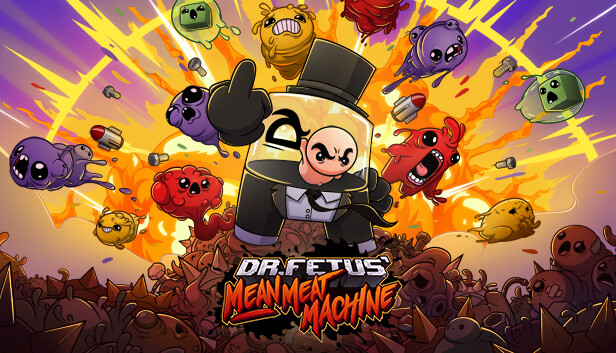
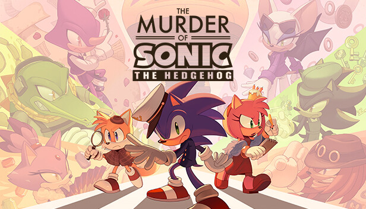
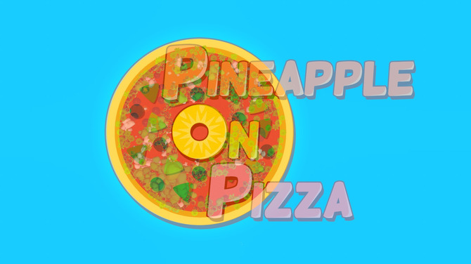
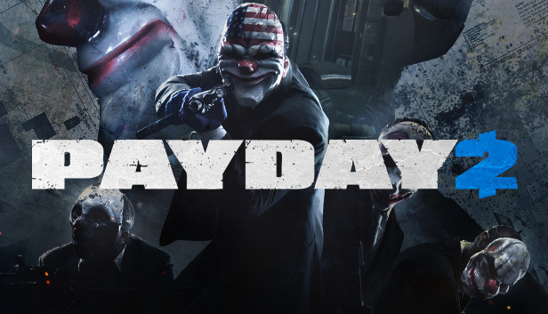
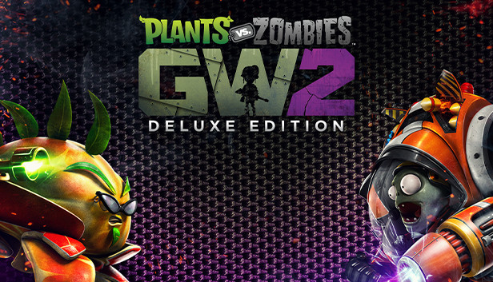
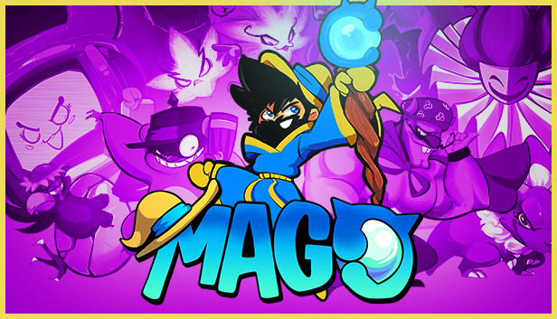

10 juegos que deberias darle una oportunidad
Estos son 10 juegos que a nuestro parecer estan algo infravalorados o olvidados, para las horas de diversion y rejugabilidad que pueden ofrecernos si tan solo le dieramos una oportunidad o si ya se las haz dado a alguno de estos juegazos, estamos casi seguros que no te arrepentiras o arrepentiste de probarlos ;)
Queremos aclarar que no estan ordenados del mejor al peor o viceversa, simplemente los hemos plasmado del modo al que lo escribimos xd, sin nada mas que decir, comencemos
Numero 10: Combat Master
Combat Master es el Warzone para pc's del gobierno, si de la desarrolladora Alfa Bravo Inc, viene esta copia de el warzone que trae no solo las armas, la idea y el movimiento, sino que tambien toda la interfaz es identica a la de warzone, pero con graficos bajos pero mejores que los de free fire, y hablando de free fire, combat master se puede descargar en pc tanto en steam, como en la playstore de tu celular. Aca te dejamos el link a steam por si deseas bajarlo:
https://store.steampowered.com/app/2281730/Combat_Master_Season_1/
Numero 9: Dr. Fetus' Mean Meat Machine

Dr. Fetus' Mean Meat Machine es el spin-off de la saga de super meat boy, donde podemos jugar como si tetris se tratase, pero agregandole obstaculos, trampas y animales que intentaran hacerte fallar a lo largo de sus mundos conoceras algo nuevo a lo que tendras que evitar. igualmente aca te dejamos el link del juego a steam, por si deseas probarlo:
https://store.steampowered.com/app/2228030/Dr_Fetus_Mean_Meat_Machine/
Numero 8: The Murder of Sonic the Hedgehog

The Murder of Sonic the Hedgehog fue lanzado el 1ro de abril de 2023 por el dia de los inocentes, desarrollado por un fan (como siempre sega apoyando a los fangames, como la gran N xd) y tenia a todos los fans del erizo azul sorprendios y hablando de el, no solo porque el juego aparecio de la nada en steam, ni porque era gratis, sino que este juego con gameplay de simulador de citas es realmente muy bueno, incluso algunos llamandolo "El GOTY of the year". El link por si deseas agregarlo a tu biblioteca ;):
https://store.steampowered.com/app/2324650/The_Murder_of_Sonic_the_Hedgehog/
Numero 7: Pineapple On Pizza

Pineapple On Pizza desarrollado por el grande de alva majo donde segun se pregunta y propone que el videojuego nos muestre el sabor que una pizza con piña nos ofece, esta dedicado para esas personas que por alguna razon no la han probado, ya sea por asco a la piña o por alergias, nosotros te invitamos a que le des una oportunidad. ¿Puede un juego compartir el sabor?
https://store.steampowered.com/app/2263010/Pineapple_on_pizza/
Numero 6: Super Meat Boy y Super Meat Boy Forever
Aqui tenemos 2 en 1, porque no? Asi como su spin-off, tan bien te recomendamos los 2 juegos principales, teniendo un nivel de de dificulad algo elevado, pero que sabemos que podrias llegar a disfrutar, el primero siendo un clasico juego de plataformas y el segundo un endlessrunner que tiene tanto carisma como el primero. Link a ambos juegos:
https://store.steampowered.com/app/40800/Super_Meat_Boy/
---
https://store.steampowered.com/app/581660/Super_Meat_Boy_Forever/
Numero 5: Bread & Fred
Estando ya a mitad de el top te recomendamos Bread & Fred un juego de pinguinos en plataformas multijugador local, que si no tienes amigos, puedes jugarlo en solitario junto a una roca, aunque hace unos pocos dias a fecha de creacion de este top han sacado la actualizacion de online, ahora es mas bueno y disfrutable asi como estresante, lleno de caidas, easter eggs, nieve y pinguinos :). link:
https://store.steampowered.com/app/1607680/Bread__Fred/
Numero 4: The Past Within
de el juego colorido y alegre del puesto anterior te traemos The Past Within un juego de puzzles cooperativo donde no necesitas conexion a internet, puedes jugar junto a un amigo, por discord por ejemplo ya que tendras que elejir si ser el pasado o el futuro y comunicar lo que sea que ven en su entorno y revelar el plan de Albert Vanderboom. Enlace:
https://store.steampowered.com/app/1515210/The_Past_Within/
Numero 3: Payday 2

Casi llegando al final te traemos Payday2 que apesar de que a publicacion del top acaba de salir su tercera entrega este sige siendo bastante recomendado por nosotros, aqui un grupo de atracadores buscan completar su mision con exito, en este juego obviamente ubicado en estados unidos, puedes tunear tus armas y equipamento, estando disponible en steam y consolas, pero nosotros te dejamos solo el link a steam:
https://store.steampowered.com/app/218620/PAYDAY_2/
Numero 2: Plantas vs Zombies: Warden Warfare 2

Plantas vs Zombies: Plants vs Zombies: Garden Warfare 2 un juego donde no solo puedes jugar el modo campaña como las plantas, sino tambien como los zombies e igualmente disfrutar su sorprendentemente aun vivo multijugador donde tienes personalizacion, modos y misiones esperando a que le des una probada junto a crazy dave o dr.zombos. Link a steeeeam:
https://store.steampowered.com/app/1922560/Plants_vs_Zombies_Garden_Warfare_2_Edicin_Deluxe
Numero 1: Mago

Aqui si tengo que admitir que fue intencional la pocision 1... Mago, El juego de le youtuber Pepe el Mago desarrollado por Dream Potion Games es un juego de plataformas 2D al estilo retro donde jugamos como un hechicero (Pepe El Mago xd) y tendremos que viajar atravez de diferentes niveles, conocer nuevos personajes y rescatar a nuestra amada que fue secuestrada por el perverso Gourmet en un reino donde cualquier cosa puede suceder. Zelda:
https://store.steampowered.com/app/1098280/Mago/
Gracias por llegar hasta aqui!! realmente esperamos haberte ayudado a encontrar un nuevo juego por probar o rejugar, hemos intentado describir cada uno de la mejor manera y traer a los no tan conocidos, gracias y hasta pronto :)
siguenos